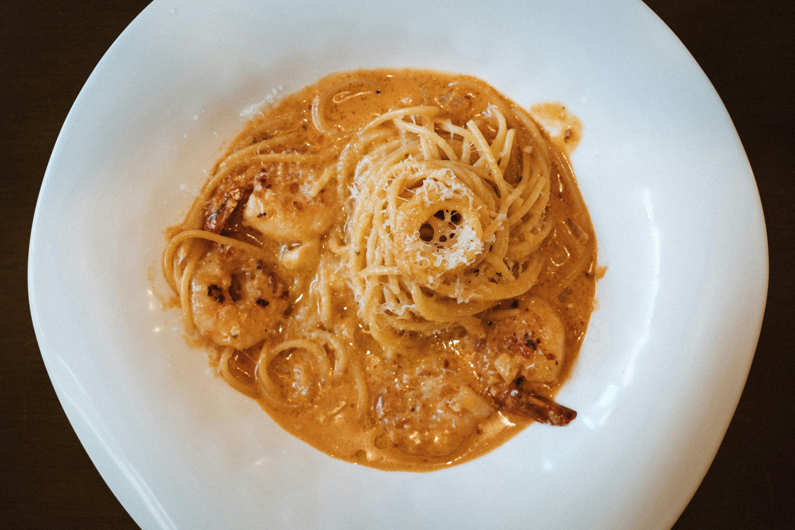

Back to Home
Spaghetti Alfredo Recipe

Description
Spaghetti Alfredo is a rich and comforting Italian-American pasta dish known for its creamy, buttery sauce. The sauce coats long strands of spaghetti, creating a smooth and indulgent texture with every bite.
Traditionally made with simple ingredients, Alfredo sauce relies on the combination of butter, cream, and cheese to create its signature flavor. It can be enjoyed on its own or enhanced with additions like grilled chicken, shrimp, or vegetables.
Ingredients
- Spaghetti pasta
- Butter
- Heavy cream
- Garlic (minced)
- Parmesan cheese (grated)
- Salt
- Black pepper
Steps
- Bring a large pot of salted water to a boil and cook the spaghetti until al dente.
- Melt butter in a pan over medium heat and sauté the garlic until fragrant.
- Add heavy cream and simmer gently, stirring to combine.
- Stir in grated Parmesan cheese until the sauce thickens and becomes smooth.
- Season the sauce with salt and black pepper to taste.
- Add the cooked spaghetti to the sauce and toss until evenly coated.
- Serve hot, optionally garnished with extra Parmesan cheese.